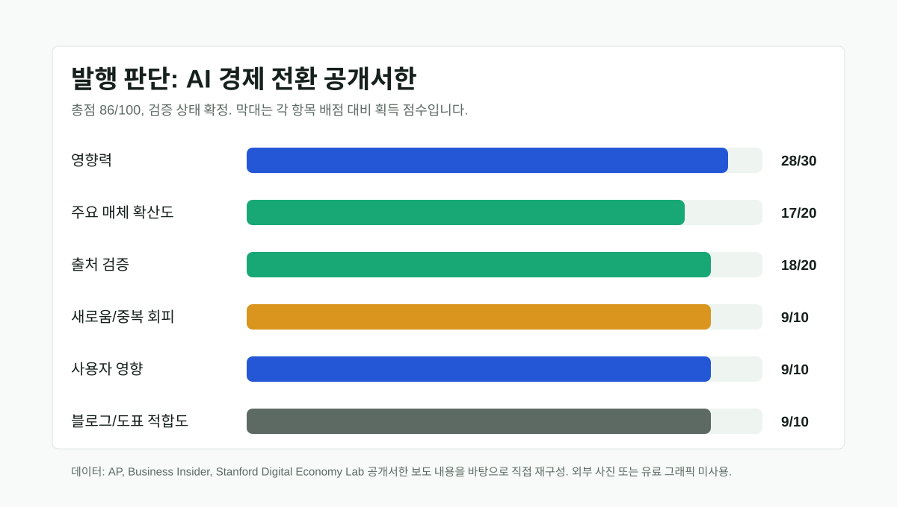

AI 일자리 충격, 이제 공개서한이 아니라 정책 질문이다
200명 이상의 경제학자, AI 연구자, 기술 업계 인사가 AI의 경제 전환과 대규모 일자리 대체 위험에 대비해야 한다는 공개서한에 이름을 올렸다. 새 모델 발표보다 덜 화려하지만, 오늘의 메인 뉴스로 볼 이유는 분명하다. AI가 생산성 도구를 넘어 노동시장 제도와 재교육, 소득 안전망의 문제로 이동했기 때문이다.

핵심 요약
AI 논쟁의 중심이 성능에서 분배로 이동한다
AP는 2026년 7월 13일 이 공개서한이 Stanford Digital Economy Lab 주도로 발표됐고, Anthropic, Google, OpenAI 관계자와 노벨상 수상자를 포함한 200명 이상이 서명했다고 보도했다. Business Insider도 같은 날 Eric Schmidt, Reid Hoffman, Joseph Stiglitz, Daron Acemoglu, Simon Johnson 등 주요 서명자를 확인했다. 핵심은 "AI가 10년 안에 훨씬 강력해질 수 있고, 산업혁명보다 짧은 시간에 경제를 바꿀 수 있다"는 문제 제기다.
선정 이유
최근 AI 뉴스는 모델 성능, 데이터센터 투자, 중국 모델 비용 경쟁에 집중됐다. 하지만 기업 도입이 빨라질수록 독자에게 더 직접적인 질문은 "내 일과 조직 구조가 어떻게 바뀌는가"다. 이 공개서한은 단일 기업의 홍보가 아니라 경제학자, AI 연구자, 업계 인사가 같은 문장에 서명한 사건이고 AP가 일반 뉴스로 다뤘다는 점에서 발행 기준을 넘었다.
| 항목 | 점수 | 판단 근거 |
|---|---|---|
| 영향력 | 28/30 | AI의 생산성, 고용, 재교육, 정책 설계에 직접 연결되는 전세계 이슈 |
| 일반 주요 매체 확산도 | 17/20 | AP와 Business Insider가 독립 보도, Times of India가 후속 인용 |
| 신뢰도/출처 검증 | 18/20 | AP가 Stanford Digital Economy Lab 주도와 서명자 규모를 확인, BI가 주요 서명자와 전문 맥락 확인 |
| 새로움/중복 회피 | 9/10 | 기존 게시글의 모델·거버넌스 주제와 달리 노동시장 정책 중심 |
| 사용자 영향 | 9/10 | 기업 인력계획, 개발자·사무직 재교육, 정부 정책에 직접 영향 |
| 블로그 적합도 | 5/5 | 기술 뉴스와 한국 독자 관점을 연결하기 좋음 |
| 이미지/도표화 가능성 | 4/5 | 서명자 수와 판단 기준은 도표화 가능하나 세부 노동시장 수치는 아직 신중해야 함 |
| 절차 | 결과 | 확인 내용 |
|---|---|---|
| 원문 확인 | 부분 확인 | AP와 BI가 Stanford Digital Economy Lab 공개서한 원문과 핵심 문구를 인용. 직접 원문 페이지는 검색 결과에서 안정적으로 확인되지 않아 원문 링크 대신 보도 링크를 사용 |
| 독립 확인 | 확정 | AP와 Business Insider가 같은 핵심 사실, 서명자 규모, 발표 주체를 독립 보도 |
| 전문매체 확인 | 부분 확인 | BI가 최근 스타트업 채용 변화, IMF·학계 연구 맥락을 함께 설명 |
| 반대 확인 | 확정 | 본문에서 현재 광범위한 실업이 이미 발생했다는 식의 단정은 피하고, 노동시장 영향이 아직 논쟁적임을 표시 |
| 날짜 확인 | 확정 | AP와 BI 모두 2026년 7월 13일 보도. 한국 시간 기준 7월 14일 아침 발행 후보 |
| 수치 확인 | 확정 | 200명 이상, 16명 노벨상 수상자는 AP에 직접 기재. 세부 직업별 감소율은 이번 글에서 단정하지 않음 |
| 이해관계 확인 | 확정 | 공개서한은 정책 촉구 성격의 캠페인 문서이며, 서명자 구성 자체가 메시지의 일부 |
본문 해설
이번 공개서한의 의미는 "AI가 일자리를 없앤다"는 단순한 경고가 아니다. 더 정확히는 시장에만 맡겨 두면 AI 도입의 이익과 비용이 불균형하게 배분될 수 있으니, 인센티브와 제도, 안전장치를 먼저 설계해야 한다는 주장이다. 이는 기업 입장에서는 인력 감축 여부보다 업무 재설계, 교육, 내부 이동, 성과 배분의 문제로 읽어야 한다.
AP 보도에서 Yoshua Bengio는 시장의 힘만 흘러가게 두기보다 민주적 선택이 필요하다는 취지의 별도 입장을 냈다. 이 대목은 기술 낙관론과 비관론 중 하나를 고르자는 말이 아니라, AI 생산성의 과실을 누구에게 어떤 규칙으로 배분할지 정해야 한다는 뜻에 가깝다.
반대 해석과 주의할 점
이 모듈을 넣은 이유는 공개서한이 본질적으로 정책 촉구 문서이기 때문이다. 현재까지 AI가 경제 전체에 대규모 실업을 만들었다고 단정할 만한 근거는 제한적이다. BI도 최근 연구들을 언급하며, 일부 스타트업의 신입 채용 감소와 AI 보조 팀 구조 변화는 보이지만 광범위한 순고용 충격은 아직 논쟁적이라고 설명한다. 따라서 이 글은 "실업이 이미 시작됐다"가 아니라 "정책 준비 시간이 줄어든다는 경고가 주류 뉴스로 올라왔다"로 읽어야 한다.
한국 독자 영향
한국에서는 AI 도입이 제조, 금융, 공공, 교육, 개발 조직에 동시에 들어가고 있다. 그래서 핵심 질문은 도구 도입률이 아니라 직무 재설계다. 기업은 반복 문서 작업을 줄이는 대신 검증자, 데이터 관리자, 자동화 운영자 역할을 어떻게 만들지 정해야 한다. 개인 독자는 특정 모델 사용법보다 AI와 함께 결과물을 검증하고 업무 흐름을 다시 짜는 능력을 먼저 봐야 한다.
이미지·표 참고와 저작권
AP 기사에 포함된 사진은 AP 저작권 이미지이므로 저장하거나 재게시하지 않았다. 이 글의 시각 자료는 공개 보도의 확인 가능한 수치와 블로그 자체 판단 항목만으로 만든 SVG다. 공개서한 본문은 짧은 핵심 취지만 요약했고, 원문 또는 기사 전문을 복사하지 않았다.
| 단계 | 결과 | 확인 내용 |
|---|---|---|
| 데이터 | 통과 | 점수는 블로그 판단 기준, 200명 이상과 16명 수치는 AP 보도 기준 |
| 계산 | 통과 | 항목별 점수 합계 86점 확인 |
| 의미 | 통과 | 노동시장 충격 규모를 그래프로 과장하지 않고 발행 판단만 표시 |
| 시각 | 통과 | 축 대신 막대형 판단표 사용, 모바일 축소 시 대체 텍스트 제공 |
| 출처 | 통과 | 캡션과 출처 섹션에 직접 재구성 여부 명시 |
출처 링크
발행 전 확인 포인트
공개서한의 직접 원문 URL이 안정적으로 확인되면 출처 링크에 추가한다. 후속 보도에서 서명자 수가 늘거나 철회자가 나오면 본문 수치를 업데이트한다. 고용 충격 규모는 아직 예측 영역이므로 단정적 수치를 제목에 쓰지 않는다.